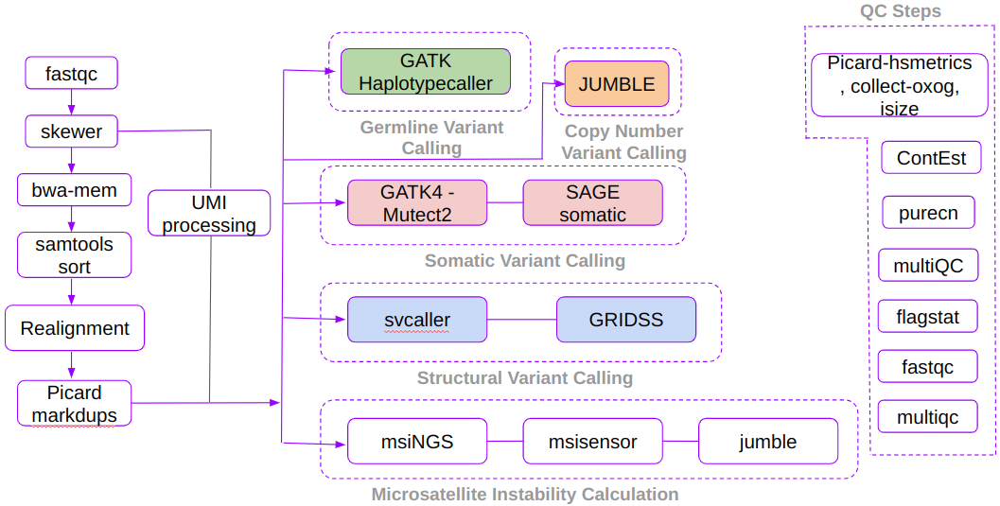
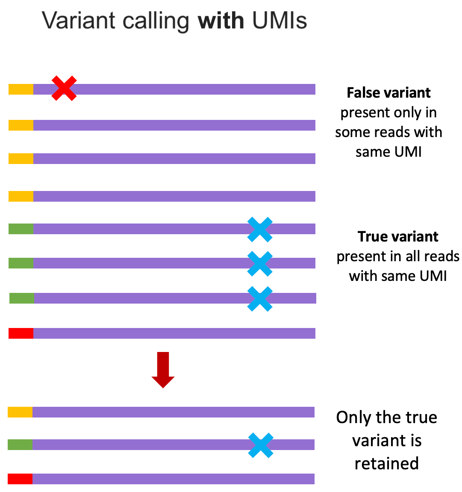

Autoseq - Pipeline
Autoseq pipeline is specifically designed to run liquid biopsy samples, however, it performs equally well with tissue biopsied samples with minor modification to the recommended settings. This pipeline requires both tumor and matched normal samples; and the input fastq file has to be either in the format of fastq.gz or fq.gz. Additionally, the input file name has to be specified in the format PROJECT-SDID-TYPE-SAMPLEID-PREPID-CAPTUREID. For example: PB-P-00462065-CFDNA-04055058-KH20221214-C420221214.fastq.gz. To know more about this format, visit Barcodes page. This pipeline can be called either with or without umi parameter. If we specify umi parameter, UMI processing will be performed.
This pipeline can be broadly classified into 7 major steps. They are
- Preprocessing and UMI Processing
- Germline Variant Calling
- Somatic Variant Calling
- Copy Number Variant Calling
- Structural Variant Calling
- Microsatellite Instability
- QC steps
Pipeline workflow

Preprocessing and UMI Processing
This step covers various sub-steps such as trimming, UMI processing, bwa alignment, indel realignment etc. For trimming the input fastq file, we are using a tool called skewer. It automatically identifies adapter sequence and removes them from each reads. Once trimming process is completed, the resulting trimmed fastq file will be passed to UMI processing step. For UMI pre-procssing we are using fgbio's groupreadsbyumi, callduplexconsensus, and filterconsensus. During UMI preprocessing stage, the input fastq files be converted to ubam file. Then the bwa alignment will be carried out for the trimmed fastq files and the resulting bam file will be merged with the previously generated ubam file, so that the UMI information will be preserved in the final bam file. Then an indel realignment step is performed in the bam file with the help of gatk's targetcreator and indelrealigner to improve the accuracy of alignment near indel regions.
Once the bam file with UMI information is generated and indels regions are re-aligned, we will group reads based on UMI using fgbio's groupreadsbyumi and consequtively call consensus reads with fgbio's callduplexconsensus. The resulting bam file will then be converetd to fastq file, bwa aligned, and indel regions will be re-aligned.

Reference: https://help.geneiousbiologics.com/hc/en-us/articles/4781289585300-Understanding-Single-Cell-technologies-Barcodes-and-UMIsOnce we group reads based on consensus, we can observe that true variants are present in most of the reads that has same UMI, where as false variants that arise due to sequencing error will present only in a small fractions of reads that has same UMI. Fgbio's FilterConsensusReads uses this and few other concept to filter variants that are probably arising from sequencing artifacts. To know more about all the filters that are applied, you can visit fgbio's FilterConsensusReads page. Finally, fgbio's clipbam is used to clip N bases from the end of either R1 or R2 so that variants present in end of consensus reads are not counted twice (if not clipped, the variants present in both R1 and R2 will be counted as 2 variants; though technically only 1 variant is present in forward and reverse strand.)
Once the preprocessing and UMI processing steps are completed, the remaining steps can be run in parallel.
Germline Variant Calling
For normal sample, we use GATK's haplotypecaller to identify all germline variants (including SNPs and INDELs). Once the variant call file is generated, it is then annotated using VEP.